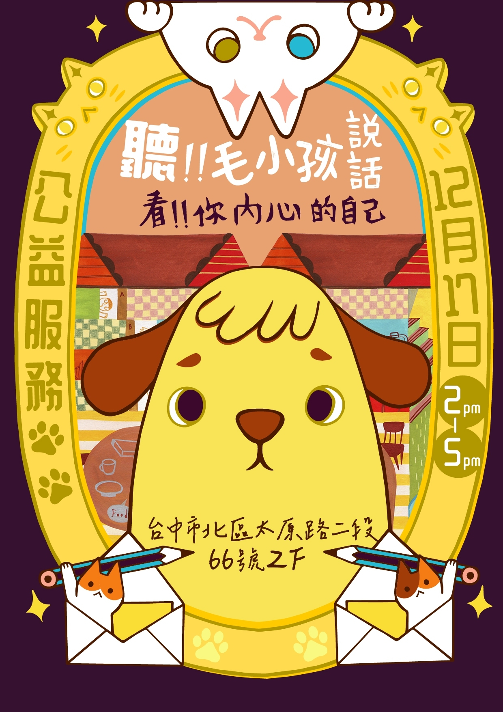

日期：2023.12.17 (日) 時間：14:00 - 17:00 地點：台中市北區太原路二段66號2樓 （幸福守門人據點） 公益價：300元／15分鐘 服務項目：寵物溝通／塔羅／Henna／人類圖／象棋占卜 匯款期限：填寫報名表三日內 FB 線上報名
【寵物溝通】事前準備 ◆ 照片 一個月內動物正面可清晰看到雙眼的獨照。（盡可能提供2-3張） ※ 我們是透過動物的雙眼進行意念上的交流，即便動物不在現場或是他在睡覺中都是可以進行溝通的。 ※ 本次活動不提供動物走失與離世溝通。 ◆ 基本資料 －請提供動物的名字、性別、年齡。 －照護人名字跟稱謂（你平日對毛孩的自稱）動物會用這個稱謂理解你是誰。 ※ 如果稱謂不是很明確，建議提供想詢問的人物照片，要問其他相關人物時也要提供照片喔。 ◆ 心理建設 －溝通前記得提醒毛孩，有人會跟他聊天，避免有溝通師與動物說話造成恐慌而拒絕溝通的狀況。 －保持動物愉快的心情。 ※ 這一點看似無聊，但卻非常重要，當你心情不好的時候你會想跟別人聊天嗎？所以千萬記得，保持動物愉快的心情是很重要的。 ◆ 準備問題 －可以事前將想要問的問題進行列表，才不會遇到溝通時不知道該跟動物聊什麼。 －如果真的不知道能問什麼，純粹想要聊聊天的，我們也會協助你問問題，讓你更了解動物在想些什麼。 【其他服務】事前準備 ◆ 人類圖解讀 －預約人類圖解讀服務的朋友，須準備好自己的出生時間（年／月／日／時：分） －如果不清楚自己的出生時間，請到戶政事務所申請出生證明，以確認正確的出生時間。 ◆ Henna能量圖騰 －由於Henna圖騰將彩繪在你的手臂上，請記得穿著方便露出手臂的衣服來現場。 ◆ 貓貓似顏繪 －請先準備好想繪製人物的獨照。 －可於12/9前先將照片傳到插畫家的Instagram帳號： @poya414 ，並發訊息告知「12/17公益活動／預約姓名／預約時段」。 ◆ 準備問題 －無論是哪一項占卜服務，都可以在事前就先將心中的問題列出，例如想換工作、近期的人際或感情、學業或事業接下來的發展……等。 －當你心中的問題越明確，現場的占卜師們就越能夠快速聚焦在回應你的問題上噢！ ※ 現場不提供健康問題占卜。 【當天活動方式】 1. 當天請在預約時段5-10分鐘前抵達現場報到。 2. 預約寵物溝通者，報到後依工作人員視情況安排溝通師，無法指定溝通師。 3. 每人每次服務，皆為15分鐘。 【注意事項】 1. 報名三日內需完成轉帳，未完成轉帳將取消報名。 2. 當天未到者不予退費，將會全數捐出。 3. 寵物溝通一律使用照片來進行，請勿帶自家毛孩到現場。 4. 預約寵物溝通者必須為主要照護人，不接受代為報名。 5. 本次公益活動不接受動物走失與離世溝通，並不提供健康問題占卜。 ※本次活動收入將扣除場地費後，全數捐給台灣之心。